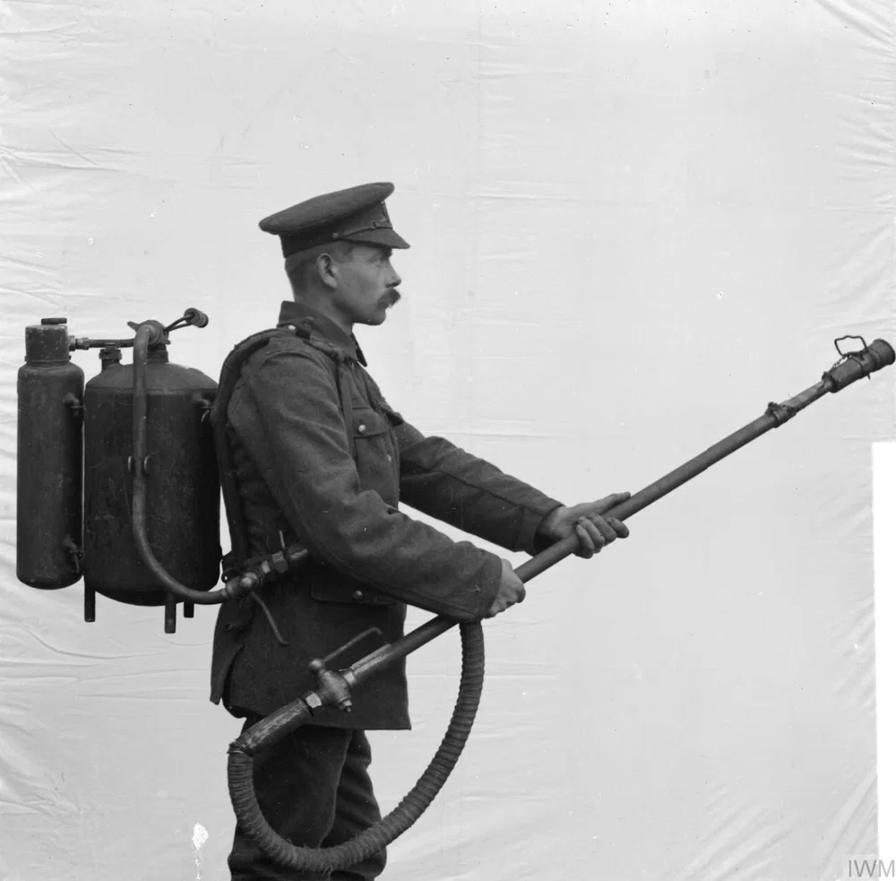
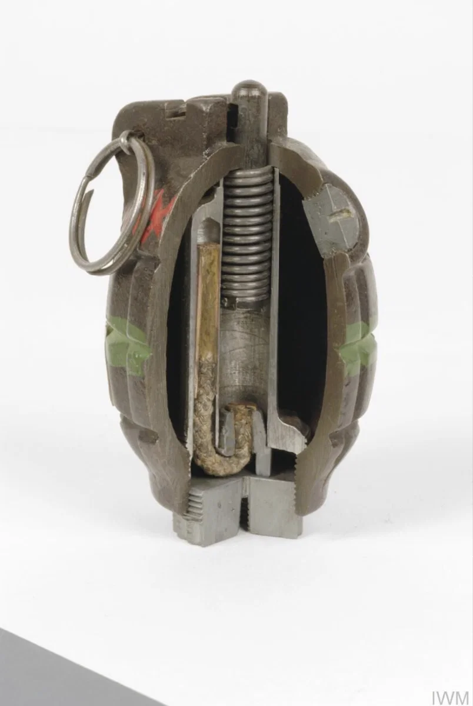
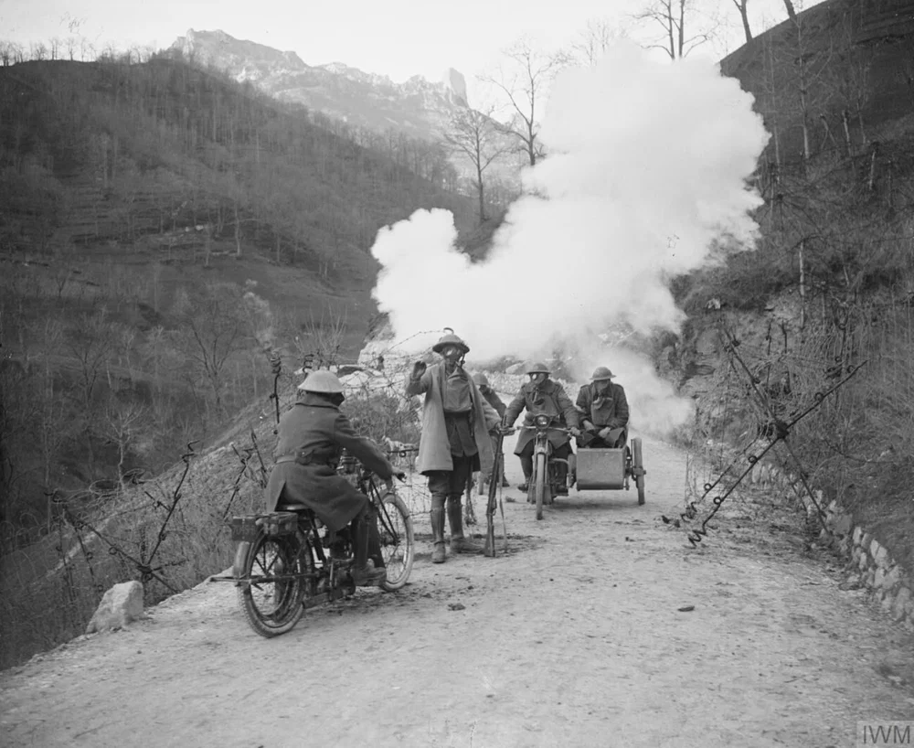
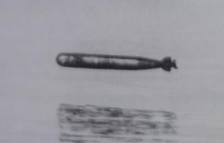
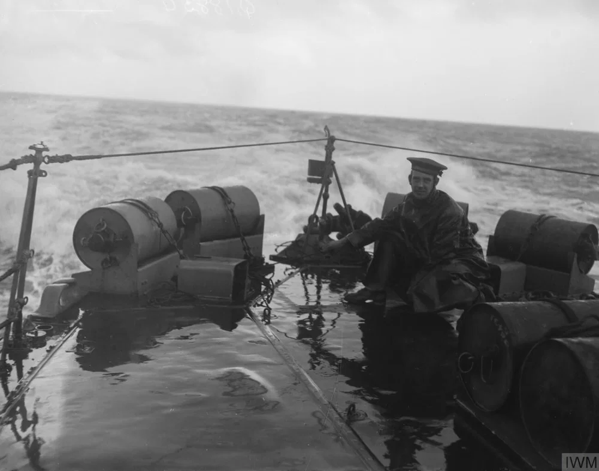
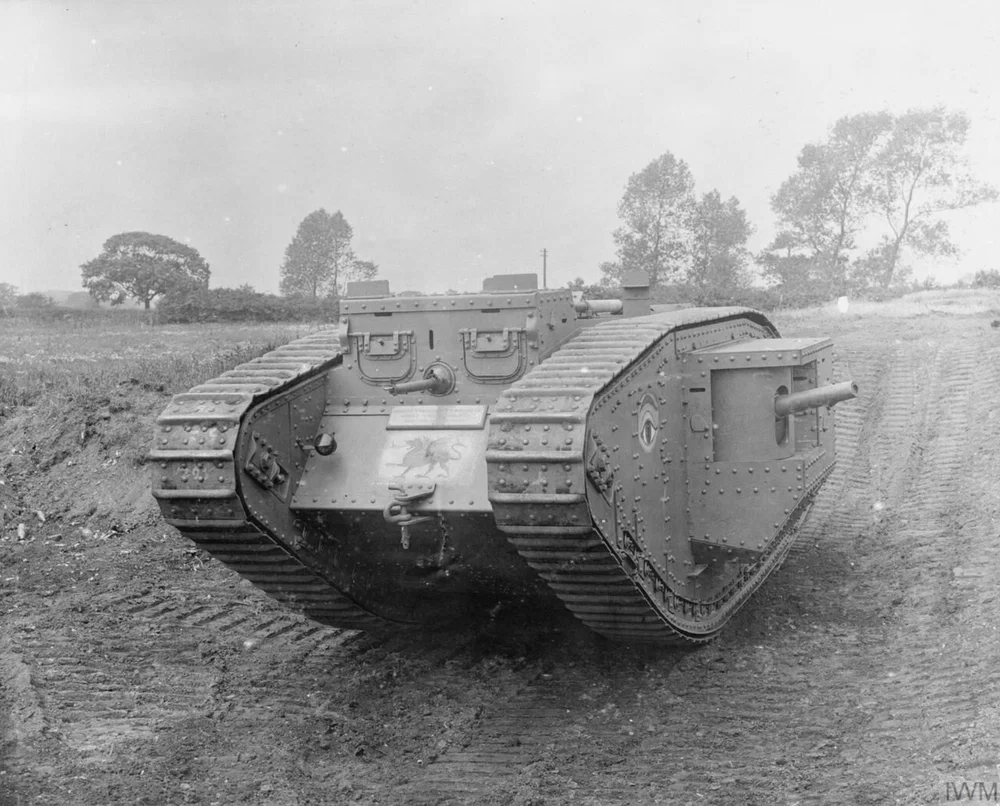
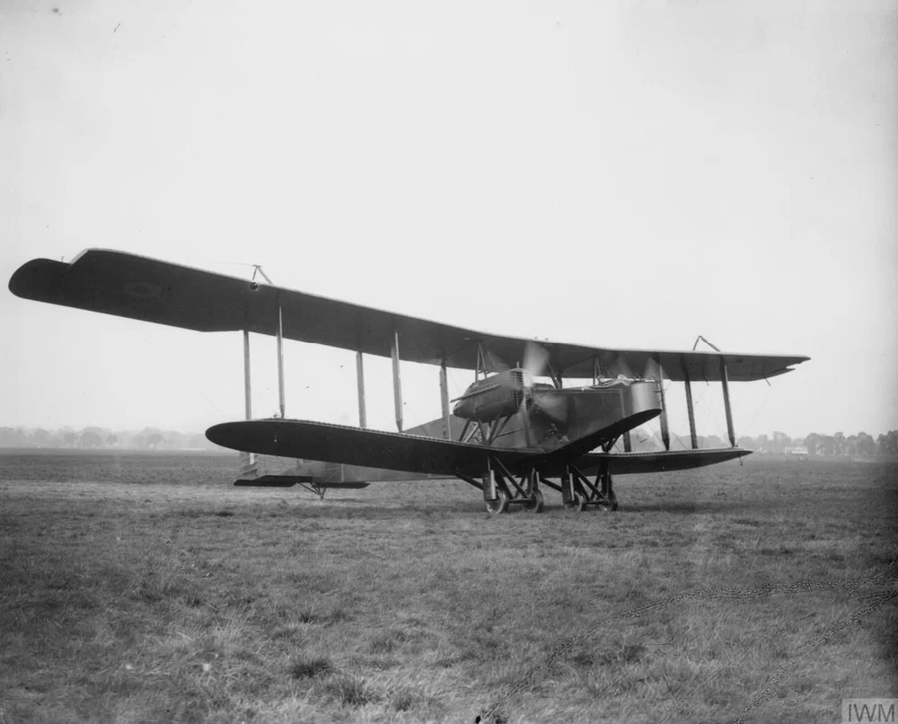

1. FLAMETHROWERS
First Use & Deployment

FIRST DEVELOPED BY
German Army (later adopted by others)
SPECIALIZED UNITS
Used by specially trained assault units known as "storm troops" (Sturmtruppen)
Technical Specifications
RANGE
Up to 36 metres (40 yards)
MECHANISM
Used gas to push out fuel under pressure, ignited when reaching the nozzle
CRITICAL FLAW: Soldiers armed with flamethrowers became the first and most visible targets for enemy fire — using one became almost a form of suicide.
2. HAND GRENADES
Early Development & Mass Production

EARLY VERSIONS
Primitive homemade devices using old jam or tobacco tins
MASS PRODUCTION
Began in 1915; tens of millions manufactured during WWI
National Variants
GERMAN: STICK GRENADE
Wooden handle (Steilhandgranate); wire pull; 5.5 or 7 second fuse; design used through WWII
FRENCH: BRACELET GRENADE
Leather strap attached to primer, worn around the wrist
BRITISH: MILLS BOMB
Pineapple-shaped with grooved sides; pin and lever mechanism; 5-second fuse
Special Types
GAS GRENADES
Filled with poisonous gas to poison or confuse the enemy
SMOKE & ILLUMINATION
Smoke to hide troop movements; illuminating material for night operations
RIFLE GRENADES
British and German grenades could be fired from a rifle using a wooden adapter
3. GAS SHELLS
First Use & Evolution

FIRST DEPLOYMENT
April 1915, Second Battle of Ypres (German Army released gas from canisters)
GAS SHELL INVENTION
July 1915, German engineers developed gas shell allowing artillery delivery over greater distances
HAGUE CONVENTION
Contrary to 1899 Hague Convention prohibiting projectiles containing gas
Types of Poison Gas
TEAR GAS
Non-lethal, lachrymatory (causes tears)
CHLORINE GAS
Burnt the lining of the lungs and choked victim to death
MUSTARD GAS
Impeded vision, caused large painful blisters, destroyed lining of air tracts
PHOSGENE (GREEN CROSS)
The deadliest of all chemical weapons
Casualty Statistics
TOTAL CHEMICAL WEAPONS CASUALTIES: 1,000,000 during WWI
COUNTERMEASURES
Gas masks frequently negated effects; chemical weapons did not prove strategically decisive
4. TORPEDOES
Specifications & Effectiveness

LENGTH
5.3 to 6.7 metres (17.5 to 22 feet)
MAXIMUM SPEED
44 knots
EFFECTIVE RANGE
Approximately 9 km (10,000 yards)
GERMAN U-BOAT CAPACITY
6 torpedoes (could be fired from bow or stern)
Impact & Countermeasures
MOST SUCCESSFUL WEAPON AT SEA: Torpedoes accounted for far more victims than naval guns or mines.
COUNTERMEASURES
Armed convoys for merchant shipping, depth charges, dazzle camouflage
DAZZLE CAMOUFLAGE
Geometric shapes painted on ships to confuse U-boat commanders; designed by artist John Everett, supervised by Edward Wadsworth
5. DEPTH CHARGES
Specifications & Mechanism
FIRST USE
1916
SHAPE & DEPLOYMENT
Barrel-shaped device rolled off back or sides of a ship
DETONATION MECHANISM
Hydrostatic valve measured water pressure; explosives detonated at preset depth
HYDROPHONE
Detected sounds underwater, allowing more precise depth charge drops
6. MINES
Types of Naval Mines

CONTACT MINE
Attached to seabed; detonated when vessel hit protruding detonators
CONTROLLED MINE
Remotely detonated from shore; useful for harbor defense
MAGNETIC MINE
Developed by British scientists; detonated by magnetic field of ship passing above
Countermeasures
MINESWEEPER
New ship type developed to find and neutralize mines; dragged wire to cut tethering cables
GERMAN INNOVATION
German Navy developed submarines capable of laying mines
7. TANKS
First Deployment & Evolution

FIRST APPEARANCE
First Battle of the Somme (July-Nov 1916), British tanks
FIRST TANK-AGAINST-TANK BATTLE
April 1918 — portent of future warfare on land
British Tank Specifications
MARK IV TANK
Crew: 8 men; Weight: up to 30 tons; Top speed: 6.5 km/h (4 mph); Lozenge shape; most-built British tank of the war
MEDIUM MARK 1
Speed: 13 km/h (8 mph); Range: 128 km (80 mi)
French Tank Specifications
SAINT CHAMOND
Crew: 9; Four machine guns; 75mm gun; proved unreliable
RENAULT FT-17
First tank with fully rotating turret (design copied since); adopted by US forces during WWI; still used by several armies at start of WWII
8. LONG-RANGE BOMBERS
German Bombers

GOTHA IV
Wingspan: 23.7 m (78 ft); Range: over 480 km (300 mi); Benz engines
P.u.W BOMB
Largest German bomb; aerodynamic design; up to 1,000 kg (2,200 lbs)
British & French Bombers
HANDLEY PAGE
Twin Rolls-Royce engines; Range: over 1,125 km (700 mi); Max bomb load: 1,524 kg (3,360 lbs)
BREGUET 14
Best French bomber; Speed: 185 km/h (115 mph); Carried 32 x 8-kg bombs; Renault engine; built by Michelin
Russian & Italian Bombers
SIKORSKY (RUSSIA)
First four-engine bombers; Crew: 9; Range: 640 km (400 mi); Only one shot down during entire war
CAPRONI (ITALY)
Large, reliable aircraft; could be converted for sea use with floats; used to drop torpedoes
SOURCES CITED
Primary Source for This Page:
Cartwright, Mark. "Weapons of World War I." World History Encyclopedia, April 12, 2021. https://www.worldhistory.org/article/1710/weapons-of-world-war-i/